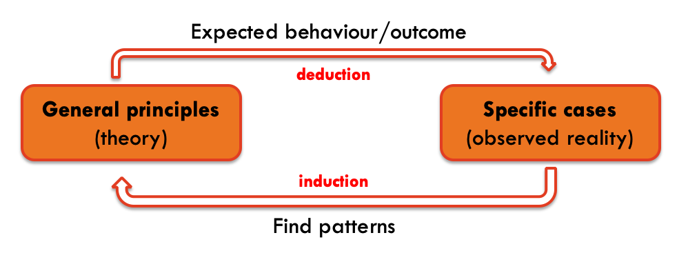
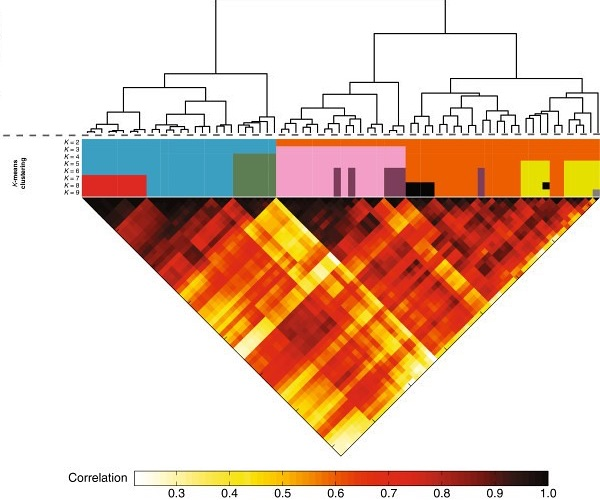

Machine Learning for Biostatistics
Module 1
2021-07-18
What is machine learning?
We came a long way since the term artificial intelligence was first used by John McCarthy in the 50’s. We still don’t have computers capable of conversations such as Hal 9000 from the movie 2001: A space odyssey, but we can easily identify some traces of synthetic intelligence in many of our interactions with electronic devices.
When we ask something to Siri or Alexa, when we do a search in the web, when we get recommendations for movies or shopping, when our car “reacts” to the proximity of other objects, when our spam email is filtered, when we play chess against a computer or when we are automatically identified in photos posted in social media, these are some simple examples of sophisticated systems that, one way or another, interpret the environment and take actions or make decision that maximize their chances of success.
Several examples can be also found in medical practice, such as patients’ access to healthcare (e.g., Babylon), cancer diagnosis (e.g, PathAI), medical imaging (e.g., Zebra Medical Vision), diagnostic support systems (e.g., Buoy Health) and drugs’ development.
In parallel with the development and dissemination of AI, we have also witness a a true data revolution in the past 30 years and a paradigm shift. Data used to be limited and “expensive” to acquire, whereas nowadays we produce more data than we can process. Many of our daily actions are stored in different databases around the world.
This is of particular relevance because AI systems, similar to the way our brain works, rely on two principles to “learn”: deduction and induction (I could also include abduction but trying to maintain things simple). Initial AI systems relied heavily in deductive methods. The system was given (taught) several rules and based on these rules and logic principles the system could act. A complementary approach is to “learn” by recognising patterns in the data fed to the system.

The challenges brought by new problems and the availability of data in different format (image, video, text, …) required new approaches outside of the traditional statistical methods. Scientists with computer science and engineering background, as well as statisticians, tackled these problems and developed new methods and algorithms that take advantage of both large amounts of data, and computational power. Despite the clear overlap with statistics, the rapid development of this area, the major contribution from non-statisticians to these methods, and the specificity of some of the problems, fostered the creation of an independent scientific subject: Machine Learning. Coming from statistical background (and maybe with narrower focus) we could also call it Statistical Learning. In fact, you may notice that the latter is used in the book we will follow.

An interesting perspective about Machine Learning vs Statistics is presented by M. Stewart.
Datasets used in the examples
The file bmd.csv contains 169 records of bone densitometries (measurement of bone mineral density). The following variables were collected:
- id – patient’s number
- age – patient’s age
- fracture – hip fracture (fracture / no fracture)
- weight_kg – weight measured in Kg
- height_cm – height measure in cm
- waiting_time – time the patient had to wait for the densitometry (in minutes)
- bmd – bone mineral density measure in the hip